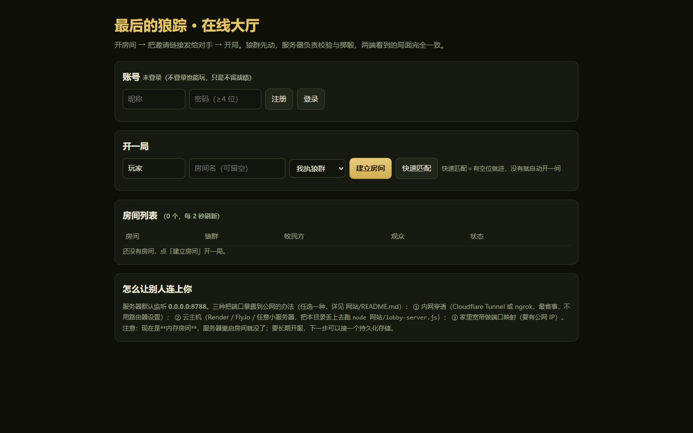
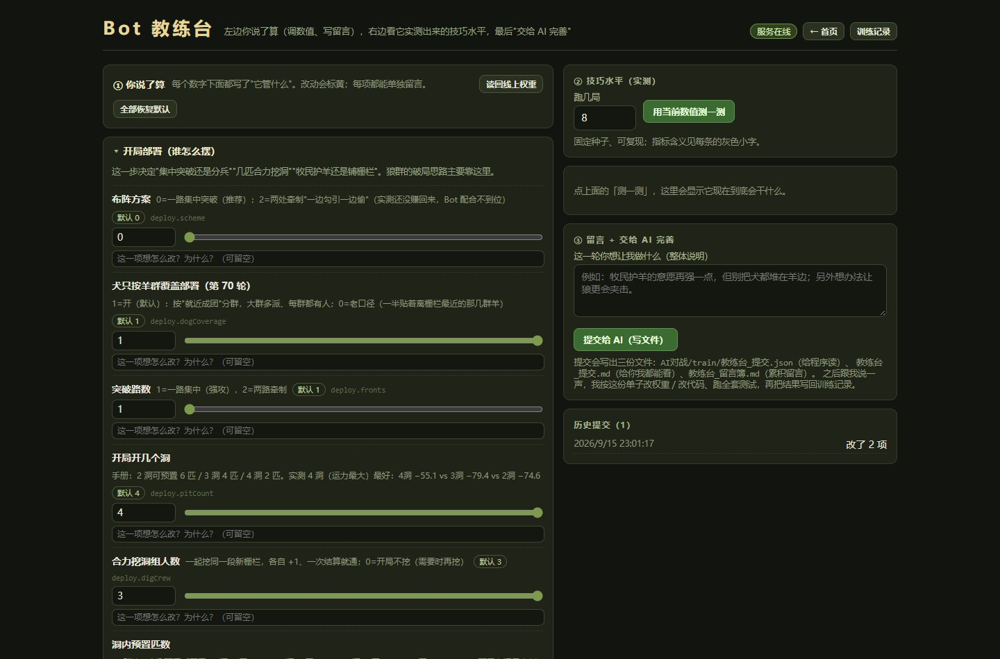
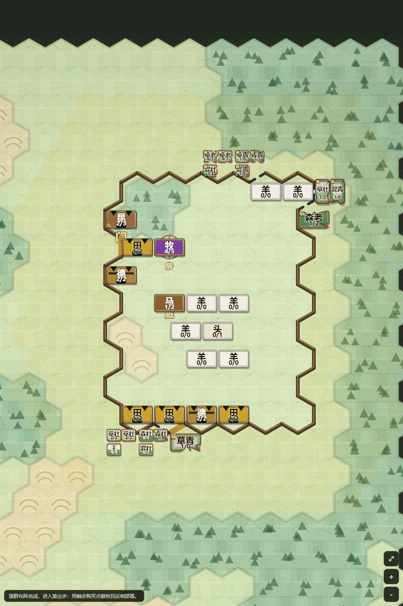
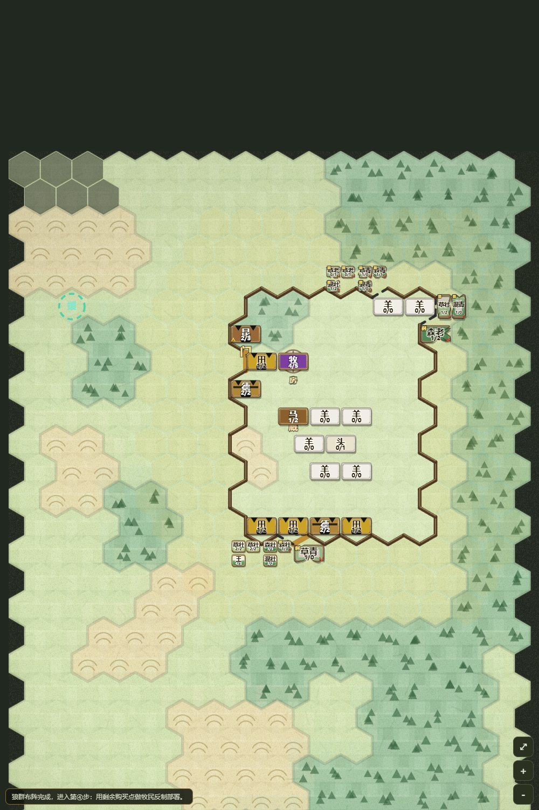

兵棋作品 · WARGAME
《最后的狼踪》不对称战术兵棋
狼群潜入牧场、猎杀牲畜、带战果撤离；牧民守畜、封堵洞口。把一套纸面规则做成能真跑、能测、能联机的可玩原型。

167
JS / MJS 文件
60
Git 提交
30
测试文件
~899
自动化检查项
16×28
六边形地图
12
回合
核心玩法
一张地图 · 两个阵营这是一场不对称的追猎：狼群潜入牧场、猎杀牲畜、带着战果撤离；牧民守畜、封堵洞口。同一张 16×28 的六边形地图、同样 12 个回合，两边要做的事完全不同。
一局怎么开始
- 选模式，再挑边：打狼群、打牧民，或者让两个大模型同桌对打。
- 四步部署：双方依次落子、买点补强；支持「一键布阵」，同一套开局可以复现。
- 行动阶段按回合推进：移动、攻击、结算，一步一步都能记录与回放。
为什么做回放
每一步都可以复盘：回放里点算子就能看属性卡，攻 / 防 / 移 / 体积和加减来源一屏给全。规则改完、数值调完，回放还能用来对照「改动到底改变了什么」。
ONE MAP. TWO SIDES. NO SECOND CHANCE.
宣传片收尾字幕
系统构成
规则 / 界面 / AI / 联机 / 测试规则引擎
规则与机制写成可执行的引擎，和界面分离；能脱离浏览器单独跑对局与测试。
网页界面
棋盘、部署、动作浮卡、战报与算子状态卡；左键选中、右键取消、滚轮缩放、空格回全图。
剧本编辑器
涂抹牧场、袭击场、撤离区，调棋盘尺寸与回合数；剧本能导入导出、存进图库。
AI 对战
人机对战可以选边；也能填 API 地址让大模型上场，自打一局并留下回放。
本地联机
账号与房间管理、开房间邀请对手；观战回放与对局记录都绑在剧本上。
自动化测试
30 个测试文件、约 899 项检查，覆盖地图坐标、数值表、对局模拟与回放保真。
界面截图
8 张截图来自实际运行的网页原型，图注按界面内容写，点开可看大图。






AI 协作与排障
多 Agent · 日志取证- 多 Agent 协作开发：负责子代理的角色设计、派工模板与验收口径，把大块工作拆给不同角色并行推进。
- 日志取证 + A/B 对照：定位「任务下发故障」时，把一次决策的分数拆开归因，对照两组日志找出偏差来源。
- 测试兜底：自动化测试覆盖地图坐标、数值表、对局模拟与回放保真，改规则或数值后跑一条命令就能回归。
为什么把引擎和界面分开
兵棋的坑大多在规则边界：坐标换算、数值表、回合状态、回放是否保真。把这些放进不依赖浏览器的引擎里，测试才能跑得又快又稳。
技术选型与限制
做成了什么 · 还差什么技术选型
- 不依赖第三方框架，主体只用 Node 内置模块，网页端是原生 HTML / CSS / JS。
- 规则引擎与界面分离：改规则、改数值后，一条命令跑回归，不用打开浏览器手动点。
- 对局记录与回放都绑在剧本上，同一套剧本可以反复对照，也可以导出给别人。
- 60 次 Git 提交、30 个测试文件、约 899 项自动化检查，是这个项目最实在的部分。
限制与下一步
- 目前是可玩原型，重点在规则、引擎与工程化，不是完整商业游戏；美术和内容量都还有空间。
- 本地联机对战依赖本机起服务；大模型对战需要自备 API 地址与密钥。
- 下一步：继续补剧本与数值平衡，完善联机与观战体验，把更多规则边界写进自动化测试。